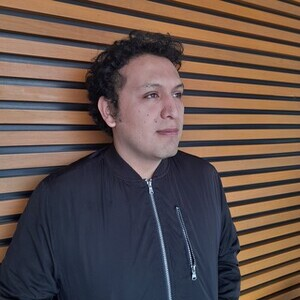
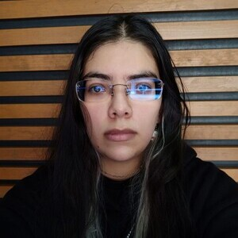

Doctorado
Valeria Karina Legaria Santiago
Generación: B22
Proyecto:
Metodología para la predicción del índice de contaminación atmosférica en tiempo real no crítico

Abdiel Reyes Vera
Generación: B21
Proyecto:
Detección de depresión en textos con aprendizaje automático
Juan Carlos Venegas Segura
Generación: A22
Proyecto:
Metodología para la transferencia y cifrado de datos geoespaciales enfocada en la localización de vehículos
Maestría
Norberto Carrillo García
Generación: B20
Proyecto:
Diseño de un sistema inteligente de geomarketing aplicando aprendizaje automático
Yanil Zuleima Contreras Jiménez
Generación: B20
Proyecto:
Análisis geoespacial de actos violentos cometidos en contra de mujeres empleando aprendizaje automático

José Miguel Medina Perez
Generación: A22
Proyecto:
Optimización dinámica de rutas para vehículos de asistencia médica en situaciones de emergencia
José Daniel Nava Meza
Generación: A22
Proyecto:
Sistema recomendador de rutas basado en principios de asociatividad
